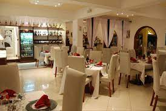
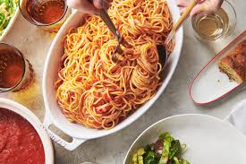

If asked about my favorite restaurant, it is none other than the Dusty Scarole.
The restaurant has a assortment of authentic Italian dishes, made with the utmost precision. The cuisine, is pasta served with a dash of tomato puree, and sprinkled oregano, known as the Special Scarole. Diving deep into this is truly, an experience of a lifetime, one that can never be forgotten. Click here to view the menu
If you would like to leave a comment, suggestion or make a reservation. Please contact us here.
About The Site